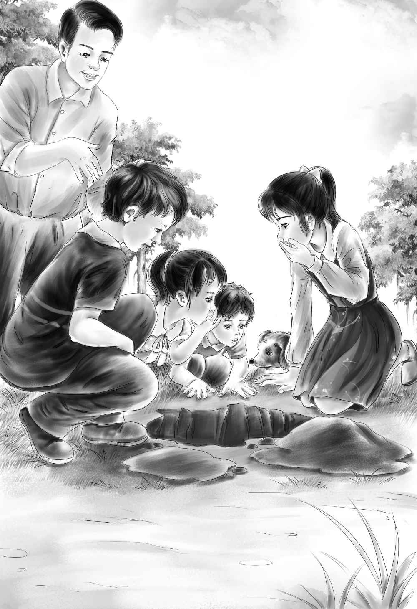

After a long sleep，the children were as good as new．
“I feel just like starting out again，”said Jessie．
“So do I，”agreed Henry．“I wonder why Joe was so excited over the shell-pile．Let’s ask him．
“Why did you say you must see that pile of shells？”began Henry when they had found Joe at the hut．
“Because I’m interested in things like that，”answered Joe．“A shell-pile means that Indians must have been on this island．”
“Come right along，Joe，”said Benny．“I’ll show it to you．”He took hold of Joe’s hand and tried to pull him up．The children laughed as Joe got on his feet．In a little while the explorers arrived at the shell-pile．
“What a wonderful thing to find！”shouted Joe．
“Why？”asked Jessie．
Joe was looking at some of the broken shells．“Well，”he said，“I’m sure the Indians made this pile．Do you remember from school that they made shell money called wampum？ Sometimes they used these quahog shells for the purple part．Quahogs are clams！”
“You think they sat here to make wampum？”asked Henry．
“Yes，and I think they dried clams here，too，”replied Joe，looking at some unbroken quahog shells．
“Why？”asked Jessie．
Joe laughed and said，“These are whole clam shells，so the Indians must have sat here to take the clams out of the shells．They used to dry the clams and then eat them later．”
“Jessie knew that，”said Benny．“She said they sat here for years and years．”
“But I didn’t know they were Indians，”said Jessie．
“Do you think we could find any wampum here，Joe？”asked Henry．
“No，I don’t really．They would save it because it was money，but we might find some old tools they used．The Indians used to smooth the shells on stones，and then make the holes with tools they got from white men．”
“Let’s dig，”said Benny．“You can tell us if we find a tool．”
“I’d like to dig，”said Joe．“But we ought to have something good to dig with．Let’s go back and get something from Captain Daniel．”
“I’m too tired，”said Benny．“And so is Watch．”
Henry laughed．“You sit right down with Watch and Violet，”he said，“and don’t go away from here，and don’t get into trouble．The rest of us will get the things and come right back．Remember now！”
“All right，”said Benny，sitting down．
“While you are waiting，you could do some digging with a stick，”called Joe．“Save everything you aren’t sure about．”
Violet began at once to look over the broken shells．“Why don’t you look，Benny？”she said．“Wouldn’t it be wonderful if you and I found something good while they are gone？ Let’s try．”
“You try，”said Benny．“I don’t care．All I can find is this big chicken leg．”
“Chicken leg！”cried Violet．“That is too big for a chicken．”
“Well，maybe a horse then．It’s an old bone，anyway，”said Benny．“I’ll save it for Joe．He will know for sure．”
Violet dug at the shells．“Benny，you know all these shells look as if someone broke them．And a lot of the purple part is gone．That means that Joe is right，and they did make wampum here．”
“Of course Joe is right，”said Benny．“Joe is always right．”
“It seems funny to me，”said Violet，“that Joe is just a handy man．I shouldn’t think he would be working here on this island if he knows so much．”
“Maybe he does something else，too，”said Benny．“And maybe he came here to have a good time and learn things this summer，just like us．”
Then the others came back．They had clam hooks and a shovel，and Joe had a camera．
“A camera！”cried Benny．“You can take a picture of Watch digging up an Indian！”
“I wish I could，”said Joe，laughing．“I want to take a picture of the shell-pile．You and Watch sit right where you are．That will show how big the shell-pile is．”
Violet scrambled out of the way．
“No，no，”said Joe．“Don’t go．I want you in the picture，too．You stand beside Watch．”
So Violet stood where she was，and Joe took the picture．He took four pictures，one from each side．
“Why do you want all these pictures，Joe？”asked Henry．
“Maybe I’d better tell you something，”said Joe． “If the people on the mainland knew about this pile，they would be over here with cameras and shovels before we could stop them．You wouldn’t like that，would you？”
“Oh，no！”cried Benny．“We don’t want a lot of people over here．”
“You children had better not tell anyone about this shell-pile before your grandfather knows，”said Joe．
“All right，we won’t，”said Henry．“We’ll tell Grandfather when he comes to visit us．Now，let’s dig．I’d like to do this for a living，Joe——go to far off places and dig up old bones and things．”
“Good for you，Henry！”cried Joe．“It is very interesting work，but let me warn you，it isn’t all fun．You may work for a year and not find anything．”
“Just like fishing，”said Benny．
“Exactly，”agreed Joe．“Maybe you’d like to work with Henry．”
“No，I wouldn’t，”said Benny．“I’d rather fish，because you can eat the fish．”
“You will help us now，won’t you？”asked Henry．“We need every man we can get．”
“Sure，”said Benny．“Watch，you can help，too．”
Watch obeyed，but he soon barked and held up his paw．There was a white bone sticking in it．
“A fishhook！”cried Joe．“Right in your paw，Watch！ Here，let me take it out．It’s a fishhook made from an animal bone．”
“That means Indians used to fish here，doesn’t it？”asked Henry．
“Yes，I think so，”said Joe．“Now，do you want to work just a little more？ I’d like to dig under the pile before we go．”
“Sure，”said Benny．“We’re not hungry，because we ate so much stew．What do you think we’ll find，Joe？”
“I haven’t any idea，”said Joe．He took the shovel and soon dug quite a big hole．They all got down on their hands and knees to look in the hole．
“Is that anything？”asked Violet，pointing．“It looks like a piece of a dish．”
“It’s a piece of a dish！”shouted Joe．
“Here is another piece！”said Jessie，handing it to Joe．
“I think that these are all pieces of a bowl，”cried Joe．The children found some more pieces and gave them to Joe．He wiped off the sand and put the pieces together．“Yes，this is a cooking bowl，”said Joe．“I’m sure now that Indians lived here．We know now that they used to get clams here，and that they made wampum here．We may find more things．This island is a wonderful place．”

Violet could see that Joe kept his eyes on the bowl every minute．
“That dish tells us more than anything else we have found，”said Joe．
“I don’t think so，”said Benny，to everyone’s surprise．“I think my horse bone tells the most，because it tells that the Indians had horses．See！”Benny pointed to the bone sticking up out of the sand．
“Benny Alden，”Joe almost shouted．“The Indians didn’t have horses before the white man came．Where did you find this？”
“On the back of the pile，”answered Benny．“We’re digging on the wrong side，I guess．”
“It’s a man’s bone，Benny！”cried Joe．“It’s part of a skeleton．Do you know what a skeleton is？”
“Oh，yes，”said Benny．“All of us have a skeleton inside us．It’s made of bones．”
“That’s right，”said Henry．“Show us exactly where you found the bone．”
“Right here，”said Benny，going to the other side of the pile．
“Let’s dig！”cried Joe．“But be careful！ Down，Watch！ You’re a good dog，but this is no place for you to dig．Oh，children，look！”
Another bone came in sight．
“If you don’t mind，please let me do the digging，will you？ Just sit and watch me．”
The children sat back and watched Joe as he slowly dug the sand away．Even Benny was excited，as he saw twelve small bones side by side in the sand．
“There ought to be another set just like these，”said Joe．
“There they are！”shouted Henry．“And look，Joe！ Look at the arrowhead sticking out！”
“He was shot，”cried Joe．“Shot with an arrow．This is the skeleton of an Indian！”
Before long the whole skeleton lay before the excited children．
“Well，well！”said Joe，sitting back to rest．“We can’t move this skeleton because we haven’t the right tools．It will be safe because nobody knows it is here．Let’s cover him up again．”
“Cover him up？”shouted Benny．“But we just found him，Joe！ He is for our museum！”
“I know，Benny，”answered Joe．“Will you leave him here，just to please me？ We can dig some other day in the cave．Aren’t you getting hungry now？”
“Yes，I am，”said Benny．“Let’s go home and get some bread and milk．”
Jessie smiled at Joe．It was so easy to please Benny sometimes．“Shall we take the bowl，Joe？”she asked．
“Oh，yes！ Take all the small things to put in your museum．”
So the explorers took their collection of clam hooks and Indian things and started home for supper．
“Let’s call this end of the island ‘Indian Point’，”said Henry．
And that is what it was always called after that．